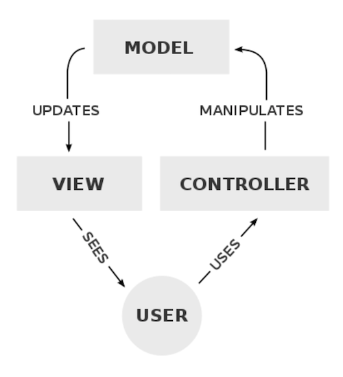
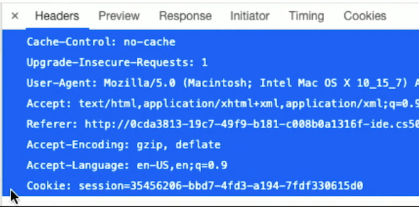
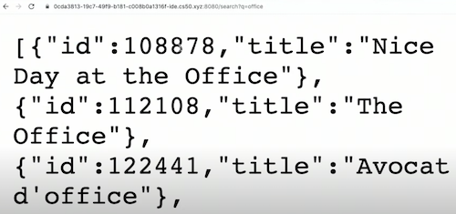
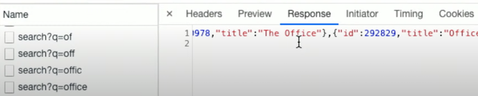

Lecture 9
Web programming
- Today we’ll create more advanced web applications by writing code that runs on the server.
- Last week, we used
http-serverin the CS50 IDE as a web server, a program that listens for connections and requests, and responds with web pages or other resources. - An HTTP request has headers, like:
GET / HTTP/1.1 ...- These headers can ask for some file or page, or send data from the browser back to the server.
- While
http-serveronly responds with static pages, we can use other web servers that parses, or analyzes request headers, likeGET /search?q=cats HTTP/1.1, to return pages dynamically.
Flask
- We’ll use Python and a library called Flask to write our own web server, implementing additional features. Flask is also a framework, where the library of code also comes with a set of conventions for how it should be used. For example, like other libraries, Flask includes functions we can use to parse requests individually, but as a framework, also requires our program’s code to be organized in a certain way:
application.py requirements.txt static/ templates/application.pywill have the Python code for our web server.requirements.pyincludes a list of required libraries for our application.static/is a directory of static files, like CSS and JavaScript files.templates/is a directory for files that will be used to create our final HTML.
- There are many web server frameworks for each of the popular languages, and Flask will be a representative one that we use today.
- Flask also implements a particular design pattern, or way that our program and code is organized. For Flask, the design pattern is generally MVC, or Model–view–controller:
- The controller is our logic and code that manages our application overall, given user input. In Flask, this will be our Python code.
- The view is the user interface, like the HTML and CSS that the user will see and interact with.
- The model is our application’s data, such as a SQL database or CSV file.
- The simplest Flask application might look like this:
from flask import Flask app = Flask(__name__) @app.route("/") def index(): return "hello, world"- First, we’ll import
Flaskfrom theflasklibrary, which happens to use a capital letter for its main name. - Then, we’ll create an
appvariable by giving our file’s name to theFlaskvariable. - Next, we’ll label a function for the
/route, or URL with@app.route. The@symbol in Python is called a decorator, which applies one function to another. - We’ll call the function
index, since it should respond to a request for/, the default page. And our function will just respond with a string for now.
- First, we’ll import
- In the CS50 IDE, we can go to the directory with our application code, and type
flask runto start it. We’ll see a URL, and we can open it to seehello, world. - We’ll update our code to actually return HTML with the
render_templatefunction, which finds a file given and returns its contents:from flask import Flask, render_template app = Flask(__name__) @app.route("/") def index(): return render_template("index.html")- We’ll need to create a
templates/directory, and create anindex.htmlfile with some content inside it. - Now, typing
flask runwill return that HTML file when we visit our server’s URL.
- We’ll need to create a
- We’ll pass in an argument to
render_templatein our controller code:from flask import Flask, render_template, request app = Flask(__name__) @app.route("/") def index(): return render_template("index.html", name=request.args.get("name", "world"))- It turns out that we can give
render_templateany named argument, likename, and it will substitute that in our template, or our HTML file with placeholders.- In
index.html, we’ll replacehello, worldwithhello,to tell Flask where to substitute thenamevariable:<!DOCTYPE html> <html lang="en"> <head> <title>hello</title> </head> <body> hello, {{ name }} </body> </html>
- In
- We can use the
requestvariable from the Flask library to get a parameter from the HTTP request, in this case alsoname, and fall back to a default ofworldif one wasn’t provided. - Now, when we restart our server after making these changes, and visit the default page with a URL like
/?name=David, we’ll see that same input returned back to us in the HTML generated by our server.
- It turns out that we can give
- We can presume that Google’s search query, at
/search?q=cats, is also parsed by some code for theqparameter and passed along to some database to get all the results that are relevant. Those results are then used to generate the final HTML page.
Forms
- We’ll move our original template into
greet.html, so it will greet the user with their name. Inindex.html, we’ll create a form:<!DOCTYPE html> <html lang="en"> <head> <title>hello</title> </head> <body> <form action="/greet" method="get"> <input name="name" type="text"> <input type="submit"> </form> </body> </html>- We’ll send the form to the
/greetroute, and have an input for thenameparameter and one for the submit button. - In our
applications.pycontroller, we’ll also need to add a function for the/greetroute, which is almost exactly what we had for/before:@app.route("/") def index(): return render_template("index.html") @app.route("/greet") def greet(): return render_template("greet.html", name=request.args.get("name", "world"))- Our form at
index.htmlwill be static since it can be the same every time.
- Our form at
- Now, we can run our server, see our form at the default page, and use it to generate another page.
- We’ll send the form to the
POST
- Our form above used the GET method, which includes our form’s data in the URL.
- We’ll change the method in our HTML:
<form action="/greet" method="form">. Our controller will also need to be changed to accept the POST method, and look for the parameter somewhere else:@app.route("/greet", methods=["POST"]) def greet(): return render_template("greet.html", name=request.form.get("name", "world"))- While
request.argsis for parameters in a GET request, we have to userequest.formin Flask for parameters in a POST request.
- While
- Now, when we restart our application after making these changes, we can see that the form takes us to
/greet, but the contents aren’t included in the URL anymore.
Layouts
- In
index.htmlandgreet.html, we have some repeated HTML code. With just HTML, we aren’t able to share code between files, but with Flask templates (and other web frameworks), we can factor out such common content. - We’ll create another template,
layout.html:<!DOCTYPE html> <html lang="en"> <head> <title>hello</title> </head> <body> {% block body %}{% endblock %} </body> </html>- Flask supports Jinja, a templating language, which uses the
{% %}syntax to include placeholder blocks, or other chunks of code. Here we’ve named our blockbodysince it contains the HTML that should go in the<body>element.
- Flask supports Jinja, a templating language, which uses the
- In
index.html, we’ll use thelayout.htmlblueprint and only define thebodyblock with:{% extends "layout.html" %} {% block body %} <form action="/greet" method="post"> <input autocomplete="off" autofocus name="name" placeholder="Name" type="text"> <input type="submit"> </form> {% endblock %} - Similarly, in
greet.html, we define thebodyblock with just the greeting:{% extends "layout.html" %} {% block body %} hello, {{ name }} {% endblock %} - Now, if we restart our server, and view the source of our HTML after opening our server’s URL, we see a complete page with our form inside our HTML file, generated by Flask.
- We can even reuse the same route to support both GET and POST methods:
@app.route("/", methods=["GET", "POST"]) def index(): if request.method == "POST": return render_template("greet.html", name=request.form.get("name", "world")) return render_template("index.html")- First, we check if the
methodof therequestis a POST request. If so, we’ll look for thenameparameter and return HTML from thegreet.htmltemplate. Otherwise, we’ll return HTML from theindex.html, which has our form. - We’ll also need to change the form’s
actionto the default/route.
- First, we check if the
Frosh IMs
- One of David’s first web applications was for students on campus to register for “frosh IMs”, intramural sports.
- We’ll use a
layout.htmlsimilar to what we had before:<!DOCTYPE html> <html lang="en"> <head> <meta name="viewport" content="initial-scale=1, width=device-width"> <title>froshims</title> </head> <body> {% block body %}{% endblock %} </body> </html>- A
<meta>tag in<head>allows us to add more metadata to our page. In this case, we’re adding acontentattribute for theviewportmetadata, in order to tell the browser to automamtically scale our page’s size and fonts to the device.
- A
- In our
application.py, we’ll return ourindex.htmltemplate for the default/route:from flask import Flask, render_template, request app = Flask(__name__) SPORTS = [ "Dodgeball", "Flag Football", "Soccer", "Volleyball", "Ultimate Frisbee" ] @app.route("/") def index(): return render_template("index.html") - Our
index.htmltemplate will look like this:{% extends "layout.html" %} {% block body %} <h1>Register</h1> <form action="/register" method="post"> <input autocomplete="off" autofocus name="name" placeholder="Name" type="text"> <select name="sport"> <option disabled selected value="">Sport</option> <option value="Dodgeball">Dodgeball</option> <option value="Flag Football">Flag Football</option> <option value="Soccer">Soccer</option> <option value="Volleyball">Volleyball</option> <option value="Ultimate Frisbee">Ultimate Frisbee</option> </select> <input type="submit" value="Register"> </form> {% endblock %}- We’ll have a form like before, and have a
<select>menu with options for each sport.
- We’ll have a form like before, and have a
- In our
application.py, we’ll allow POST for our/registerroute:@app.route("/register", methods=["POST"]) def register(): if not request.form.get("name") or not request.form.get("sport"): return render_template("failure.html") return render_template("success.html")- We’ll check that our form’s values are valid, and then return a template depending on the results, even though we aren’t actually doing anything with the data yet.
- But a user can change the form’s HTML in their browser, and send a request that contains some other sport as the selected option!
- We’ll check that the value for
sportis valid by creating a list inapplication.py:from flask import Flask, render_template, request app = Flask(__name__) SPORTS = [ "Dodgeball", "Flag Football", "Soccer", "Volleyball", "Ultimate Frisbee" ] @app.route("/") def index(): return render_template("index.html", sports=SPORTS) ...- Then, we’ll pass that list into the
index.htmltemplate.
- Then, we’ll pass that list into the
- In our template, we can even use loops to generate a list of options from the list of strings passed in as
sports:... <select name="sport"> <option disabled selected value="">Sport</option> {% for sport in sports %} <option value="{{ sport }}">{{ sport }}</option> {% endfor %} </select> ... - Finally, we can check that the
sportsent in the POST request is in the listSPORTSinapplication.py:... @app.route("/register", methods=["POST"]) def register(): if not request.form.get("name") or request.form.get("sport") not in SPORTS: return render_template("failure.html") return render_template("success.html") - We can change the select menu in our form to be checkboxes, to allow for multiple sports:
{% extends "layout.html" %} {% block body %} <h1>Register</h1> <form action="/register" method="post"> <input autocomplete="off" autofocus name="name" placeholder="Name" type="text"> {% for sport in sports %} <input name="sport" type="checkbox" value="{{ sport }}"> {{ sport }} {% endfor %} <input type="submit" value="Register"> </form> {% endblock %}- In our
registerfunction, we can callrequest.form.getlistto get the list of checked options.
- In our
- We can also use radio buttons, which will allow only one option to be chosen at a time.
Storing data
- Let’s store our registered students, or registrants, in a dictionary in the memory of our web server:
from flask import Flask, redirect, render_template, request app = Flask(__name__) REGISTRANTS = {} ... @app.route("/register", methods=["POST"]) def register(): name = request.form.get("name") if not name: return render_template("error.html", message="Missing name") sport = request.form.get("sport") if not sport: return render_template("error.html", message="Missing sport") if sport not in SPORTS: return render_template("error.html", message="Invalid sport") REGISTRANTS[name] = sport return redirect("/registrants")- We’ll create a dictionary called
REGISTRANTS, and inregisterwe’ll first check thenameandsport, returning a different error message in each case. Then, we can safely store the name and sport in ourREGISTRANTSdictionary, and redirect to another route that will display registered students. - The error message template, meanwhile, will just display the message:
{% extends "layout.html" %} {% block body %} {{ message }} {% endblock %}
- We’ll create a dictionary called
- Let’s add the
/registrantsroute and template to show the registered students:@app.route("/registrants") def registrants(): return render_template("registrants.html", registrants=REGISTRANTS)- In our route, we’ll pass in the
REGISTRANTSdictionary to the template as a parameter calledregistrants:{% extends "layout.html" %} {% block body %} <h1>Registrants</h1> <table> <thead> <tr> <th>Name</th> <th>Sport</th> </tr> </thead> <tbody> {% for name in registrants %} <tr> <td>{{ name }}</td> <td>{{ registrants[name] }}</td> </tr> {% endfor %} </tbody> </table> {% endblock %} - Our template will have a table, with a heading row and row for each key and value stored in
registrants.
- In our route, we’ll pass in the
- If our web server stops running, we’ll lose the data stored, so we’ll use a SQLite database with the SQL library from
cs50:from cs50 import SQL from flask import Flask, redirect, render_template, request app = Flask(__name__) db = SQL("sqlite:///froshims.db") ...- In the IDE’s terminal, we can run
sqlite3 froshims.dbto open the database, and use the.schemacommand to see the table with columns ofid,name, andsport, which was created in advance.
- In the IDE’s terminal, we can run
- Now, in our routes, we can insert and select rows with SQL:
@app.route("/register", methods=["POST"]) def register(): name = request.form.get("name") if not name: return render_template("error.html", message="Missing name") sport = request.form.get("sport") if not sport: return render_template("error.html", message="Missing sport") if sport not in SPORTS: return render_template("error.html", message="Invalid sport") db.execute("INSERT INTO registrants (name, sport) VALUES(?, ?)", name, sport) return redirect("/registrants") @app.route("/registrants") def registrants(): registrants = db.execute("SELECT * FROM registrants") return render_template("registrants.html", registrants=registrants)- Once we’ve validated the request, we can use
INSERT INTOto add a row, and similarly, inregistrants(), we canSELECTall rows and pass them to the template as a list of rows.
- Once we’ve validated the request, we can use
- Our
registrants.htmltemplate will also need to be adjusted, since each row returned fromdb.executeis a dictionary. So we can useregistrant.nameandregistrant.sportto access the value of each key in each row:<tbody> {% for registrant in registrants %} <tr> <td>{{ registrant.name }}</td> <td>{{ registrant.sport }}</td> <td> <form action="/deregister" method="post"> <input name="id" type="hidden" value="{{ registrant.id }}"> <input type="submit" value="Deregister"> </form> </td> </tr> {% endfor %} </tbody> - We can even email users with another library,
flask_mail:import os import re from flask import Flask, render_template, request from flask_mail import Mail, Message app = Flask(__name__) app.config["MAIL_DEFAULT_SENDER"] = os.getenv("MAIL_DEFAULT_SENDER") app.config["MAIL_PASSWORD"] = os.getenv("MAIL_PASSWORD") app.config["MAIL_PORT"] = 587 app.config["MAIL_SERVER"] = "smtp.gmail.com" app.config["MAIL_USE_TLS"] = True app.config["MAIL_USERNAME"] = os.getenv("MAIL_USERNAME") mail = Mail(app)- We’ve set some sensitive variables outside of our code, in the IDE’s environment, so we can avoid including them in our code.
- It turns out that we can provide configuration details like a username and password and mail server, in this case Gmail’s, to the
Mailvariable, which will send mail for us.
- Finally, in our
registerroute, we can send an email to the user:@app.route("/register", methods=["POST"]) def register(): email = request.form.get("email") if not email: return render_template("error.html", message="Missing email") sport = request.form.get("sport") if not sport: return render_template("error.html", message="Missing sport") if sport not in SPORTS: return render_template("error.html", message="Invalid sport") message = Message("You are registered!", recipients=[email]) mail.send(message) return render_template("success.html")- In our form, we’ll also need to ask for an email instead of a name:
<input autocomplete="off" name="email" placeholder="Email" type="email">
- In our form, we’ll also need to ask for an email instead of a name:
- Now, if we restart our server and use the form to provide an email, we’ll see that we indeed get one sent to us!
Sessions
- Sessions are how web servers remembers information about each user, which enables features like allowing users to stay logged in.
- It turns out that servers can send another header in a response, called
Set-Cookie:HTTP/1.1 200 OK Content-Type: text/html Set-Cookie: session=value ...- Cookies are small pieces of data from a web server that the browser saves for us. In many cases, they are large random numbers or strings used to uniquely identify and track a user between visits.
- In this case, the server is asking our browser to set a cookie for that server, called
sessionto a value ofvalue.
- Then, when the browser makes another request to the same server, it’ll send back cookies that the same server has set before:
GET / HTTP/1.1 Host: gmail.com Cookie: session=value - In the real world, amusement parks might give you a hand stamp so you can return after leaving. Similarly, our browser is presenting our cookies back to the web server, so it can remember who we are.
- Advertising companies might set cookies from a number of websites, in order to track users across all of them. In Incognito mode, by contrast, the browser doesn’t send any cookies set from before.
- In Flask, we can use the
flask_sessionlibrary to manage this for us:from flask import Flask, redirect, render_template, request, session from flask_session import Session app = Flask(__name__) app.config["SESSION_PERMANENT"] = False app.config["SESSION_TYPE"] = "filesystem" Session(app) @app.route("/") def index(): if not session.get("name"): return redirect("/login") return render_template("index.html") @app.route("/login", methods=["GET", "POST"]) def login(): if request.method == "POST": session["name"] = request.form.get("name") return redirect("/") return render_template("login.html") @app.route("/logout") def logout(): session["name"] = None return redirect("/")- We’ll configure the session library to use the IDE’s filesystem, and use
sessionlike a dictionary to store a user’s name. It turns out that Flask will use HTTP cookies for us, to maintain thissessionvariable for each user visiting our web server. Each visitor will get their ownsessionvariable, even though it appears to be global in our code. - For our default
/route, we’ll redirect to/loginif there’s no name set insessionfor the user yet, and otherwise show a defaultindex.htmltemplate. - For our
/loginroute, we’ll setnameinsessionto the form’s value sent via POST, and then redirect to the default route. If we visited the route via GET, we’ll render the login form atlogin.html. - For the
/logoutroute, we can clear the value fornameinsessionby setting it toNone, and redirect to/again. - We’ll also generally need a
requirements.txtthat includes the names of libraries we want to use, so they can be installed for our application, but the ones we use here have been preinstalled in the IDE.
- We’ll configure the session library to use the IDE’s filesystem, and use
- In our
login.html, we’ll have a form with just a name:{% extends "layout.html" %} {% block body %} <form action="/login" method="post"> <input autocomplete="off" autofocus name="name" placeholder="Name" type="text"> <input type="submit" value="Log In"> </form> {% endblock %} - And in our
index.html, we can check ifsession.nameexists, and show different content:{% extends "layout.html" %} {% block body %} {% if session.name %} You are logged in as {{ session.name }}. <a href="/logout">Log out</a>. {% else %} You are not logged in. <a href="/login">Log in</a>. {% endif %} {% endblock %} - When we restart our server, go to its URL, and log in, we can see in the Network tab that our browser is indeed sending a
Cookie:header in the request:

store, shows
- We’ll look through an example,
store:application.pyinitializes and configures our application to use a database and sessions. Inindex(), the default route renders a list of books stored in the database.templates/books.htmlshows the list ofbooks, as well as a form that allows us to click “Add to Cart” for each of them.- The
/cartroute, in turn, stores anidfrom a POST request in thesessionvariable in a list. If the request used a GET method, however,/cartwould show a list of books withids matching the list ofids stored insession.
- So, “shopping carts” on websites can be implemented with cookies and session variables stored on the server.
- When we view the source generated by our default route, we see that each book has its own
<form>element, each with a differentidinput that’s hidden and generated. Thisidcomes from the SQLite database on our server, and is sent back to the/cartroute. - We’ll look at another example,
shows, where we can use both JavaScript on the front-end, or side that the user sees, and Python on the back-end, or server side. - In
application.pyhere, we’ll open a database,shows.db:from cs50 import SQL from flask import Flask, render_template, request app = Flask(__name__) db = SQL("sqlite:///shows.db") @app.route("/") def index(): return render_template("index.html") @app.route("/search") def search(): shows = db.execute("SELECT * FROM shows WHERE title LIKE ?", "%" + request.args.get("q") + "%") return render_template("search.html", shows=shows)- The default
/route will show a form, where we can type in some search term. - The form will use the GET method to send the search query to
/search, which in turn will use the database to find a list of shows that match. Finally, asearch.htmltemplate will show the list of shows.
- The default
- With JavaScript, we can show a partial list of results as we type. First, we’ll use a function called
jsonifyto return our shows in the JSON format, a standard format that JavaScript can use.@app.route("/search") def search(): shows = db.execute("SELECT * FROM shows WHERE title LIKE ?", "%" + request.args.get("q") + "%") return jsonify(shows)- Now we can submit a search query, and see that we get back a list of dictionaries:

- Now we can submit a search query, and see that we get back a list of dictionaries:
- Then, our
index.htmltemplate can convert this list to elements in the DOM:<!DOCTYPE html> <html lang="en"> <head> <meta name="viewport" content="initial-scale=1, width=device-width"> <title>shows</title> </head> <body> <input autocomplete="off" autofocus placeholder="Query" type="search"> <ul></ul> <script crossorigin="anonymous" integrity="sha256-9/aliU8dGd2tb6OSsuzixeV4y/faTqgFtohetphbbj0=" src="https://code.jquery.com/jquery-3.5.1.min.js"></script> <script> let input = document.querySelector('input'); input.addEventListener('keyup', function() { $.get('/search?q=' + input.value, function(shows) { let html = ''; for (let id in shows) { let title = shows[id].title; html += '<li>' + title + '</li>'; } document.querySelector('ul').innerHTML = html; }); }); </script> </body> </html>- We’ll use another library, JQuery, to make requests more easily.
- We’ll listen to changes in the
inputelement, and use$.get, which calls a JQuery library function to make a GET request with the input’s value. Then, the response will be passed to an anonymous function as the variableshows, which will set the DOM with generated<li>elements based on the response’s data. $.getis an AJAX call, which allows for JavaScript to make additional HTTP requests after the page has loaded, to get more data. If we open the Network tab again, we can indeed see that each key we pressed made another request, with a response:
- Since the network request might be slow, the anonymous function we pass to
$.getis a callback function, which is only called after we get a response from the server. In the meantime, the browser can run other JavaScript code.
- That’s it for today!